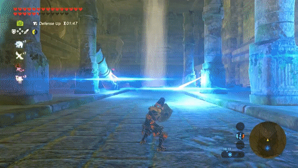
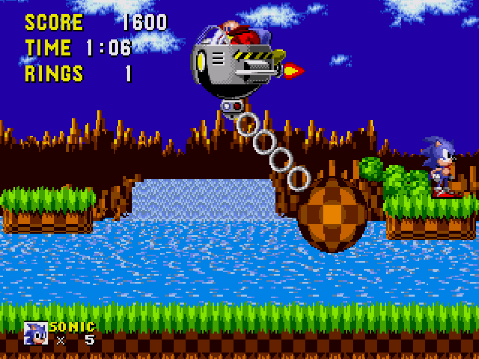

<div class="logo">
  <svg xmlns="http://www.w3.org/2000/svg" width="258" height="87.5" viewBox="0 0 258 87.5">
    <g aria-label="Dodge The Blue Shell">
      <path style="fill:var(--logo-title-color)" d="M36.9 43.7q0 4.4-1.2 8-1 3.4-3.1 6.2-2 2.7-4.8 4.6-2.8 2-6.1 3.3-3.3 1.2-7 1.9-3.8.6-7.7.6L4 68.2 1.2 68l1-42q3.3-1 7-1.5 3.6-.5 7.2-.5 4.5 0 8.2 1.4 3.8 1.3 6.5 3.8 2.7 2.6 4.2 6.2 1.6 3.7 1.6 8.3zm-12.9 2q0-1.7-.3-3.2-.4-1.6-1.3-2.8-.9-1.2-2.3-2-1.3-.7-3.2-.7l-1.3 19.3q1.9-.3 3.4-1.2 1.5-1 2.6-2.3 1.2-1.4 1.8-3.1.6-1.7.6-3.6zM77.3 46.5q0 2.8-.6 5.5-.7 2.6-2 4.9-1.2 2.3-3 4.2-1.7 2-4 3.3-2 1.4-4.7 2.2-2.6.7-5.5.7-2.8 0-5.4-.7-2.5-.7-4.7-2t-4-3.1q-1.8-1.9-3.1-4-1.3-2.3-2-4.9-.7-2.6-.7-5.3 0-2.8.7-5.3.6-2.7 1.9-5 1.2-2.3 3-4.2 1.7-2 3.9-3.4t4.7-2.2q2.5-.7 5.3-.7 4.6 0 8.3 1.4 3.7 1.4 6.4 4 2.6 2.6 4 6.3 1.5 3.7 1.5 8.3zm-13.9.8q0-1.4-.4-2.6-.3-1.3-1-2.3-.8-1-2-1.6-1-.6-2.5-.6t-2.6.5q-1.2.6-2 1.5-.8 1-1.3 2.2-.4 1.2-.4 2.6 0 1.3.4 2.6.3 1.3 1.1 2.4.7 1 1.8 1.7 1.2.6 2.6.6 1.5 0 2.7-.5 1.1-.6 2-1.6.8-1 1.2-2.3.4-1.3.4-2.6zM115 43.7q0 4.4-1.1 8-1.2 3.4-3.2 6.2-2 2.7-4.8 4.6-2.8 2-6 3.3-3.4 1.2-7.1 1.9-3.8.6-7.7.6l-2.9-.1-2.8-.2.8-42q3.5-1 7-1.5 3.7-.5 7.3-.5 4.5 0 8.3 1.4 3.7 1.3 6.4 3.8 2.7 2.6 4.2 6.2 1.6 3.7 1.6 8.3zm-12.8 2q0-1.7-.4-3.2-.4-1.6-1.3-2.8-.9-1.2-2.2-2-1.4-.7-3.3-.7l-1.3 19.3q2-.3 3.4-1.2 1.6-1 2.7-2.3 1-1.4 1.7-3.1.6-1.7.7-3.6zM154.5 62.1q-1.4 1.9-3.6 3.3-2.1 1.3-4.6 2.2-2.5 1-5 1.4-2.7.5-5 .5-4.5 0-8.4-1.7-3.8-1.6-6.5-4.4-2.8-3-4.4-6.8-1.5-3.9-1.5-8.3 0-3.4.8-6.7.7-3.3 2.2-6.1 1.4-3 3.5-5.4 2.1-2.4 4.8-4.1 2.6-1.8 5.8-2.8 3.2-1 6.8-1l2.8.2q1.6 0 3 .4 1.6.2 3 .7 1.5.5 2.7 1.1l-1 12q-1.7-.7-3.5-.9l-3.7-.2q-2.5 0-4.7.7-2.1.8-3.7 2.2-1.6 1.5-2.6 3.5t-1 4.7q0 1.6.5 3.1t1.3 2.7q1 1.2 2.3 1.9 1.3.7 3 .7 1.2 0 2.5-.3t2.2-1l.1-2.5-7.5-.1.4-9.4q4.6-.2 9.3-.2l9.4-.4zM186.5 23.5l-.3 5.8-.4 5.8-13.3.7-.3 3.9h9.3l-.6 9.7-9.4.3-.3 4.6h13.2L184 61l-.3 6.8-27 .6 1-45z"/>
      <path style="fill:var(--logo-subtitle-color)" d="M1.6 77.5h11v1H7.9v7.7H6.2v-7.7H1.6zM20.8 77.5h1.8v3.6H29v-3.6h1.8v8.7H29V82h-6.4v4h-1.8zM40.9 77.5H49v1h-6.5v2.6h6.2v1h-6.2v3.1h6.6v1H41zM72.7 82v3.2h2.9q1.4 0 2-.4.8-.4.8-1.2 0-.8-.7-1.2-.7-.3-2.1-.3zm0-3.5V81h2.7q1.2 0 1.9-.3.6-.3.6-1t-.6-1q-.7-.3-2-.3zm-1.7-1h4.5q2 0 3 .6 1.2.5 1.2 1.6 0 .8-.6 1.2-.5.5-1.6.6 1.3.2 2 .8.7.6.7 1.5 0 1.1-1.2 1.8-1.2.6-3.3.6H71zM89.8 77.5h1.8v7.7h6.3v1h-8zM105.2 77.5h1.8v5.3q0 1.4.8 2 .7.6 2.4.6t2.5-.6q.7-.6.7-2v-5.3h1.8V83q0 1.7-1.3 2.6-1.2.9-3.7.9-2.4 0-3.7-1-1.3-.8-1.3-2.5zM125.1 77.5h8.2v1H127v2.6h6.2v1h-6.2v3.1h6.6v1H125zM163 77.8V79q-1-.4-1.8-.5l-1.8-.2q-1.4 0-2.2.4-.8.4-.8 1t.5 1l2 .4 1 .1q2 .3 3 1 1 .5 1 1.6 0 1.3-1.3 1.9-1.3.7-3.8.7l-2-.2-2-.4v-1.2l2 .6 2 .2q1.5 0 2.4-.4.8-.4.8-1.1 0-.7-.6-1-.6-.4-2-.6h-1q-2-.4-2.9-1-.8-.5-.8-1.5 0-1.1 1.2-1.8 1.2-.6 3.3-.6h1.9l2 .4zM173.2 77.5h1.7v3.6h6.4v-3.6h1.8v8.7h-1.8V82H175v4h-1.7zM193.2 77.5h8.2v1h-6.5v2.6h6.2v1H195v3.1h6.6v1h-8.3zM211 77.5h1.8v7.7h6.3v1h-8zM227.5 77.5h1.8v7.7h6.3v1h-8z"/>
    </g>
    <g transform="translate(-6.1 7.2)" stroke-width=".8">
      <path style="fill:var(--primary-light);stroke:var(--shell-line-color)" d="M218.6 11.4s5.2-7.8 7.8-9.6c2.6-1.8 3.9-5.3 3.9-5.3s0-1 .7-1.4c.7-.5 1.8-.2 1.8-.2s.4.2.6.5c.3.4.9 1.3.9 2v2.4l-.6.9s.8.5 1.1 1c.4.3 1 1.4 1 2 0 .5 0 2.1-.3 2.4l-.6.8s1 .8 1 1.2c0 .4.3 1.5.1 1.9l-2.5 4.3z"/>
      <path style="fill:var(--primary-light);stroke:var(--shell-line-color)" d="M229.8 2.3s.8-1.4 1.2-1.4c.3 0 .6.4.6.4l3.2 9.2-9.3-1.2z"/>
      <path style="fill:var(--shell-top-color);stroke:var(--shell-line-color)" d="M206.6 28.3A22.4 23.9 0 0 1 221.5 10a22.4 23.9 0 0 1 22.3 5 22.4 23.9 0 0 1 6.5 23.3l-21.7-5.7z"/>
      <path style="fill:var(--primary-light);stroke:var(--shell-line-color)" d="M231 17s-1.7 1-2 1.7c-.1.7-.4 1.1-.1 2.2.2 1.1 0 1.9.9 2.5.8.7 1.3 1.5 3.6 1.8 2.3.2 3.4-1.8 3.4-1.8s.4-1 .4-2c0-1.1-.7-4-.7-4s-.7-.4-1.4-.5h-2.6z"/>
      <path style="fill:var(--primary-light);stroke:var(--shell-line-color)" d="M206.3 26.1l-3.5-6.2 7.6-.5-3.8 7.3z"/>
      <path style="fill:var(--primary-light);stroke:var(--shell-line-color)" d="M207.8 11.8l2.2 10s.5.9 1.8.9 2-.1 3-.7 3.4-2.4 4.2-4.2c.8-1.8-1.2-3.2-1.2-3.2l-9.6-3.3s-.4-.2-.4 0v.5z"/>
      <path style="fill:var(--shell-bottom-color);stroke:var(--shell-line-color)" d="M249.5 37.7a21.8 19.5 0 0 1-26 14.3A21.8 19.5 0 0 1 207 29l21.4 4z"/>
      <ellipse style="fill:var(--shell-line-color)" cx="213" cy="36.9" rx="3.1" ry="5"/>
      <ellipse style="fill:var(--shell-line-color)" cx="227.1" cy="39.7" rx="4.6" ry="4.7"/>
      <path fill="none" style="stroke:var(--shell-line-color)" d="M209.1 30.2a6.8 8.6 0 0 1 8.9-.2 6.8 8.6 0 0 1 1.4 11.2 6.8 8.6 0 0 1-8.5 3.3"/>
      <path fill="none" style="stroke:var(--shell-line-color)" d="M211.6 34.7a9.8 9 0 0 1 11.8-1 9.8 9 0 0 1 4.2 10 9.8 9 0 0 1-9.4 6.5M236 34.9a10.5 11.5 0 0 1 .7 11 10.5 11.5 0 0 1-8 6.5M244.1 36.1a10.5 11.5 0 0 1-2.3 12.2"/>
      <path style="fill:var(--primary-light);stroke:var(--shell-line-color)" d="M215.8 26s19.5 9 25 8.2c5.4-.8 6.5-1.6 6.5-1.6l.9-1.3 4-1 .7-.5s1.4 2 .6 4.2c-.7 2.2-1.5 4.8-3 5.3-1.6.6-4.4 2.2-7.7 2.2-3.2 0-9.9-.9-13.2-1.8-3.4-1-18.2-6.9-18.2-6.9s-2-.7-2.7-.1a3 3 0 0 0-.8 1.5l-.5 4s-2.6-1.2-3.1-1.9c-.6-.7-2-2.2-2-3.7.1-1.4 1.6-7.3 6.5-7.3s4.6.2 4.6.2z"/>
      <g fill="none">
        <path style="stroke:var(--shell-line-color)" d="M217.8 26.9l6.4-3.5 2.3 7M226.4 14.1l5.8-.2 5.5 1.7 5.5 9.8-4.4 8.7M237.7 15.6l4.3-2.3M244.7 33.4l-2.9-5.4"/>
        <path style="stroke:var(--shell-line-color)" d="M220.4 10.3l6 3.8-2.2 9.3"/>
      </g>
      <path style="fill:var(--primary-light);stroke:var(--shell-line-color)" d="M250.4 5s4.7-4 6-5.4c1.2-1.4 3-5.2 3-5.2s1-.5 1-.2c.2.3 1 5.2-.2 7.7-1 2.6-3.5 6.6-3.5 6.6l4.4-6.7s2 1 1.7 3.2c-.2 2-1.7 5.5-2.6 6.3l-1.5 1.7 3.5-4s1.2.5.4 2.7c-.7 2.3-4 7.2-4 7.2l2.8-3s1 1.2.4 2.5c-.5 1.2-4.5 5.4-5.3 6a33 33 0 0 0 2.2-1.4s.4 1.4.3 1.5c-.2.2-2.1 2.9-5.5 4.7a32.2 32.2 0 0 1-5.7 2.5s-2.5.1-3.3-.2c-.8-.2-3.7-1.5-4.2-2.2-.4-.7-2-1.7-1.8-4.3 0-2.5-.1-4.2 2.2-8.8 2.4-4.6 9.7-11.1 9.7-11.1z"/>
    </g>
  </svg>
</div>
<div class="inner">
  <nav>
    <a href="#">View Wins</a>
    <a href="#">Submit Win</a>
    <a href="#">Discuss Wins</a>
    <a href="#">Contact</a>
  </nav>

  <section>
    <section class="content">
      <h1>Mario Kart</h1>
      <h2>Dodging a Blue Shell</h2>
      <svg xmlns="http://www.w3.org/2000/svg" class="like" viewBox="0 0 5.2 5.2" class="like">
        <path stroke-linecap="round" stroke-linejoin="round" stroke-width=".3" d="M2.6.3L3.4 2H5L3.7 3.2 4.3 5 2.6 4M2.6.3L1.8 2H.2l1.3 1.2L.9 5l1.7-1"/>
      </svg>

      <video autoplay loop class="img">
        <source src="./images/BlueShell.mp4" type="video/mp4"/>
      </video>
    </section>
    <section class="content">
      <h1>Zelda</h1>
      <h2>Perfect Shield</h2>
      <svg xmlns="http://www.w3.org/2000/svg" class="like" viewBox="0 0 5.2 5.2" class="like">
        <path stroke-linecap="round" stroke-linejoin="round" stroke-width=".3" d="M2.6.3L3.4 2H5L3.7 3.2 4.3 5 2.6 4M2.6.3L1.8 2H.2l1.3 1.2L.9 5l1.7-1"/>
      </svg>

      
    </section>
    <section class="content">
      <h1>Super Smash Bros.</h1>
      <h2>Narrowly Avoiding Porygon</h2>
      <svg xmlns="http://www.w3.org/2000/svg" class="like" viewBox="0 0 5.2 5.2" class="like">
        <path stroke-linecap="round" stroke-linejoin="round" stroke-width=".3" d="M2.6.3L3.4 2H5L3.7 3.2 4.3 5 2.6 4M2.6.3L1.8 2H.2l1.3 1.2L.9 5l1.7-1"/>
      </svg>

      
    </section>
    <section class="content">
      <h1>Sonic the Hedgehog</h1>
      <h2>Beating a Boss with 1 Ring Left</h2>
      <svg xmlns="http://www.w3.org/2000/svg" class="like" viewBox="0 0 5.2 5.2" class="like">
        <path stroke-linecap="round" stroke-linejoin="round" stroke-width=".3" d="M2.6.3L3.4 2H5L3.7 3.2 4.3 5 2.6 4M2.6.3L1.8 2H.2l1.3 1.2L.9 5l1.7-1"/>
      </svg>

      
    </section>
  </section>
</div>
